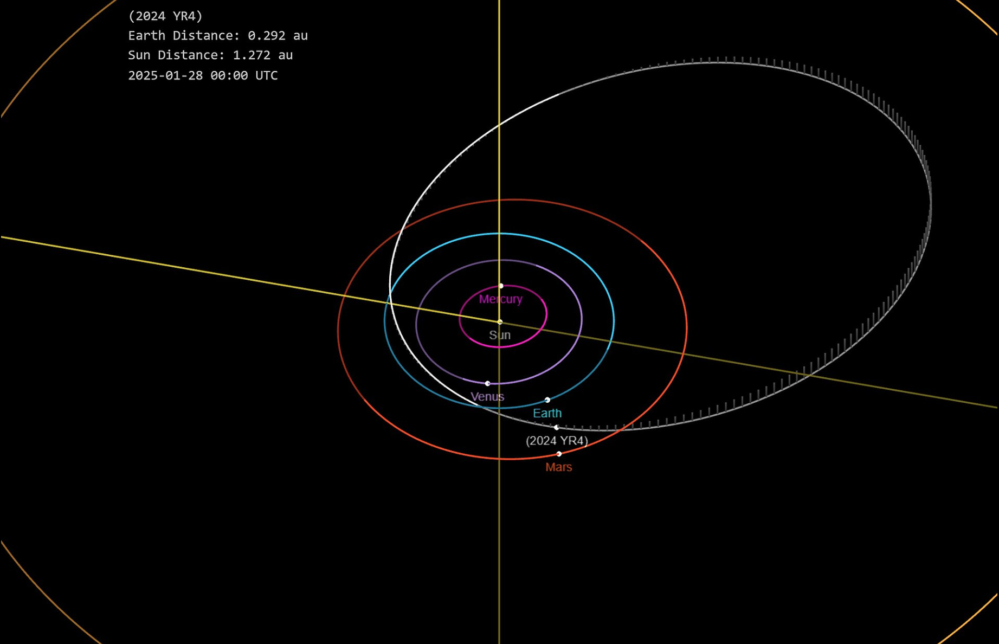

Of risks and asteroids: analyzing the impact probability of 2024 YR4

© NASA, Orbit diagram of 2024 YR4. The four inner planets and Jupiter (outer orange orbit) are shown. Positions of planets and 2024 YR4 are shown on 28 January 2025.
In February 2025, the Apollo-type near-Earth asteroid 2024 YR4, discovered just a few months earlier, dominated news and social media. Headlines warned that it “could hit Earth in 2032 with a probability of 3%." But is that really the case? Should we be worried? Let’s take a step back, bring some clarity, and use this as an opportunity to talk about risk.
Defining key terms
A near-Earth object (NEO) is, according to Wikipedia, “any small Solar System body orbiting the Sun whose closest approach to the Sun is less than 1.3 times the Earth-Sun distance.” An Apollo-type asteroid is a NEO whose orbit crosses Earth’s path.
Why can't we give a simple yes or no answer?
Large telescopes constantly scan the sky, searching for unknown moving objects. Once a new asteroid is discovered, the next step is to determine its orbit—where it’s going and how fast. The longer we observe an asteroid, the more precisely we can predict its trajectory, but these observations always come with some degree of error.
Every day, roughly 100 tons of space rock enter Earth’s atmosphere and disintegrate into dust. Occasionally, larger fragments survive and reach the surface as meteorites. Since 70% of Earth is covered by water and humans occupy only about 10% of the land, most of these rocks either sink into the ocean or go unnoticed. This highlights an important point: not only do we need to track objects that might collide with Earth, but we also need to estimate their size.
Using a combination of thermal infrared and visible-light measurements, we estimate an asteroid’s size with an uncertainty of about 10%. This means that if we estimate a diameter of 10 meters, the actual size is likely within 9 to 11 meters. Orbital predictions work similarly: the farther into the future we try to predict an asteroid’s position, the wider the confidence interval becomes due to error propagation. This is why we don’t state with certainty whether an asteroid will hit Earth, but instead provide a probability based on many simulations.
Scientists run simulations to predict where both Earth and the asteroid will be years into the future. If, in a given simulation, the asteroid’s distance from Earth is smaller than Earth’s radius, an impact occurs. To account for uncertainties, these simulations introduce small variations in the asteroid’s size, orbit, and other parameters. Suppose that, out of 100 simulations, 4 result in a collision. That means we estimate a 4% chance of impact.
For 2024 YR4, as of February 2025, the probability stands at 3%. But two weeks ago, it was 2.5%. It appears to be increasing. Why?
New observations improve our ability to predict an asteroid’s orbit and size. However, as explained here, the probability of impact often follows a characteristic pattern: first increasing as more precise data refines the asteroid’s trajectory, then decreasing as additional observations rule out potential collision scenarios.
Let's talk about risk
Setting aside confidence intervals and uncertainties for a moment, let’s assume the asteroid will hit Earth with a probability of 3%. What does that actually mean? Is it high?
A 3% chance means that if we could somehow replay history 100 times, the asteroid would hit Earth three times. To put this into perspective, here are the odds of some well-documented rare events:
- Getting struck by lightning: ~1 in 1,222,000 (0.000082%)
- Winning the Mega Millions jackpot: ~1 in 302,575,350 (0.0000003%)
- Drawing a royal flush in poker: ~1 in 649,740 (0.000154%)
At first glance, 3% appears significant compared to these other risks. However, there is an important distinction: most of these risks apply on a yearly or per-event basis, whereas the asteroid impact probability refers to a single specific event in 2032. If we annualize this risk over an 8-year period, the equivalent probability is 0.375% per year.
So, what can we conclude? Not much—yet. To refine our understanding, we introduce the concept of expected loss, which is the sum of the products of probability and potential damage. For example, let's say you lose 10 euros if a tossed coin turns out to be heads, and nothing happens if you toss tails. Then, since the probability of heads is 50%, the expected loss is: $$(0.5 \times 10) + (0.5 \times 0) = 5 \text{ euros.}$$
It is intuitive to understand that an asteroid with a low impact probability but enormous potential damage (such as a kilometer-wide impactor causing global devastation) may still justify significant mitigation efforts. Conversely, an asteroid with a higher impact probability but minor expected damage (such as a small asteroid breaking up in the atmosphere) may not warrant the same level of concern. So, to evaluate asteroid threats we don't care about probabilities alone, but their potential consequences matter, too.
Let's assume that the asteroid impact will cause tremendous harm and huge devastation. Please note that this is a theoretical assumption, as it could be that 2024 YR4 disintegrates in the atmosphere, or even that it falls into an ocean and does not harm anyone. But let's assume the worst case scenario impact: the asteroid falls in a city and kills 100 million people. Computing the damage would need us to estimate the true cost of a human value, of infrastructure of an entire city, of wildlife, of biodiversity, and much more. In any case, that number will be HUGE.
Thus, the expected loss formula tells us that the risk the sum of zero (if there is no impact), and 3% multiplied by a huge number (massive catastrophe if 2024 YR4 does hit Earth). Mathematically, the worst case scenario would yield: $$(0.97 \times 0) + (0.03 \times \text{A HUGE NUMBER}) = \text{A HUGE NUMBER.}$$ Please, note that this result strictly depends on the assumptions we make! The main takeaway should be that risk is not just about likelihood of an event, but also about consequences. Even a small probability event demands serious attention when the stakes are high, and viceversa.
So, is a probability of impact of 3% high? An absolute answer, as an absolute risk, does not exist.